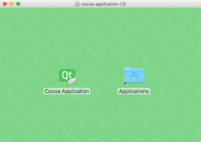

This topic describes the Qbs features specific to macOS.
Note: Qbs does not yet support the Swift programming language.
The xcode module contains properties and rules for Xcode-based development.
The ib module contains properties and rules for building Interface Builder documents, storyboards, asset catalogs, and icon sets.
The bundle module contains properties and rules for building and working with Core Foundation bundles (application bundles and frameworks) on Apple platforms.
To build an application product as a bundle, or a dynamic or static library product as a framework, add a dependency on the bundle module and set the bundle.isBundle property to true:
Depends { name: "bundle" }
bundle.isBundle: true
Qbs also provides a number of powerful features to assist in creating the Info.plist file that is part of your bundle. In fact, you do not need to provide an Info.plist file at all. Instead, Qbs will generate one automatically with the necessary keys, based on the values of module properties set in the product.
If you do specify an Info.plist file, Qbs may still inject additional keys into the final output from other sources. One notable source of Info.plist keys are partial Info.plist files which are generated as a result of compiling other resources like asset catalogs, XIBs/NIBs, and storyboards.
You may also use the bundle.infoPlist property to apply a set of key-value pairs to be added to the final Info.plist. This can be used instead of or in addition to an actual Info.plist file on disk.
Qbs uses multiplexing to create multi-architecture fat binaries and multi-variant frameworks, where a single framework can contain both a release and debug build of a library on Apple platforms.
You can set the qbs.architectures property to a list of CPU architectures (such as x86, x86_64, armv7a, armv7k, and arm64), and the qbs.buildVariants property to a list of build variants (such as debug and release), and Qbs will transparently perform the necessary steps to produce the various artifacts and combine them into a single bundle.
Since the individual build configurations are completely independent of one another, you can continue to use conditional branches in your projects such as the following:
Properties {
condition: qbs.buildVariant === "release"
cpp.optimization: "small"
}
The AppleDiskImage and AppleApplicationDiskImage items have a dependency on the dmg module. The former represents a product that is a basic Apple disk image, while the latter extends the former to create a drag 'n' drop disk image installer used for installing single application bundles.
For example, the following code snippet creates a macOS disk image with a custom background and icon layout:
AppleApplicationDiskImage {
targetName: "cocoa-application-" + version
version: "1.0"
files: [
"CocoaApplication/dmg.iconset",
"CocoaApplication/en_US.lproj/LICENSE",
// comment out the following line to use a solid-color background
// (see dmg.backgroundColor below)
"CocoaApplication/background*"
]
dmg.backgroundColor: "#41cd52"
dmg.badgeVolumeIcon: true
dmg.iconPositions: [
{"x": 200, "y": 200, "path": "Cocoa Application.app"},
{"x": 400, "y": 200, "path": "Applications"}
]
dmg.windowX: 420
dmg.windowY: 250
dmg.windowWidth: 600
dmg.windowHeight: 422 // this includes the macOS title bar height of 22
dmg.iconSize: 64
}

In addition, Qbs supports multi-language license agreement prompts that appear when the DMG is opened, with full Unicode and rich-text formatting support.